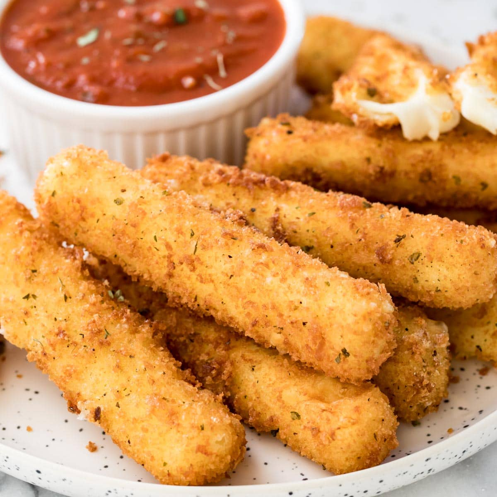

Bad Cheese Stick

Description
The "cheese stick" is a misnomer, a snack that blatantly defies expectations and not in a good way. Its apparent lack of mozzarella is immediately noticeable, leaving the consumer feeling shortchanged from the start. The crispy exterior, a vital component of a good mozzarella stick, disappointingly crumbles away into a mere whisper of crunch, devoid of any satisfying bite. The supposed "cheese" filling is a pale imitation, failing to capture the creamy, indulgent essence of authentic mozzarella. Instead, it offers a dull, flavorless encounter that leaves a lot to be desired. Without the customary stretchiness and savory richness, this substitute is more like a culinary afterthought than a true cheese stick.
This culinary experiment goes further by excluding any herbs, seasonings, or dipping sauces that could potentially salvage the experience. The result is a complete absence of depth and flavor, leaving you with a monotonous, uninspired snack that hardly lives up to the name "cheese stick." It serves as a stark reminder of how important quality ingredients and attention to detail are in the realm of snack foods.
Ingredients
- Bland, low-quality cheese substitute: Opt for a generic, flavorless cheese-like product that lacks the creamy, indulgent texture and taste of real mozzarella.
- Overly processed bread crumbs: Use bread crumbs that have been processed to the point of lacking any semblance of crunch or texture, diminishing the exterior's quality.
- Minimal herbs and seasonings: Avoid adding any herbs or seasonings to the breading, leaving it completely devoid of flavor.
- Insipid batter: Utilize a thin, tasteless batter that fails to provide the desired contrast in texture between the exterior and the filling.
- Cheap frying oil: Fry the cheese sticks in low-quality cooking oil, further diminishing any potential for flavor or texture enhancement.
Steps
- Select a Flavorless Cheese Substitute: Begin by choosing a bland, low-quality cheese substitute that lacks any authentic mozzarella qualities, such as creaminess and flavor.
- Prepare the Breading: Use overly processed bread crumbs that offer little to no crunch or texture. Avoid adding any herbs, seasonings, or spices to the breading, leaving it utterly flavorless.
- Coat the Tasteless Cheese: Dip the flavorless cheese substitute in a thin, insipid batter that lacks the contrast in texture needed to create a satisfying cheese stick.
- Fry in Cheap Cooking Oil: Heat a low-quality frying oil in a pan or deep fryer. The subpar oil choice contributes to a lack of flavor and texture enhancement during the frying process.
- Serve Without Accompaniments: Once fried, serve these uninspiring cheese sticks without any dipping sauces or flavorful accompaniments, leaving them completely devoid of depth and taste.
Return to Home